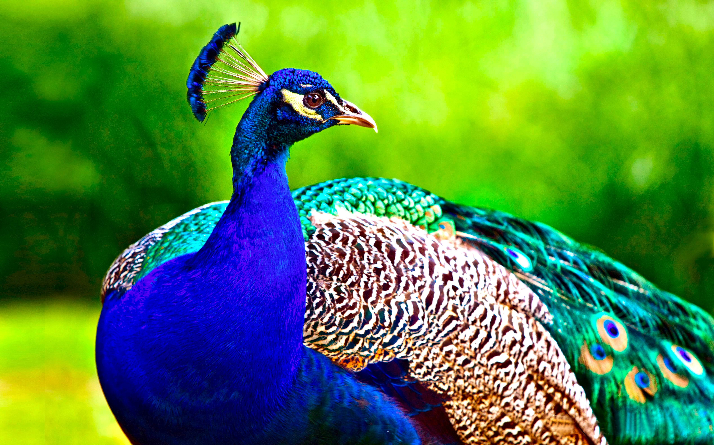

The peacock
The peacock are the best known species yet the shyest and rarest animals in the world.
- Scientific Name: Pavo. cristatus
- Average Height: 5 ft.
- Average Lifespan: 8 years
- Habitat: rain forests. Peafowl
The Indian peacock has iridescent blue and green plumage, mostly metallic blue and green. But the green peacock has green and bronze body feathers. In both species females are as big as males but lack the train and the head ornament. The peacock's "tail," known as a "train," consists not of tail quill feathers, but highly